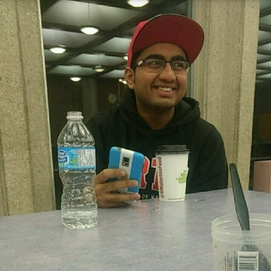
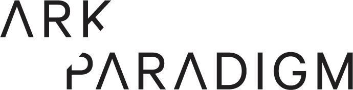
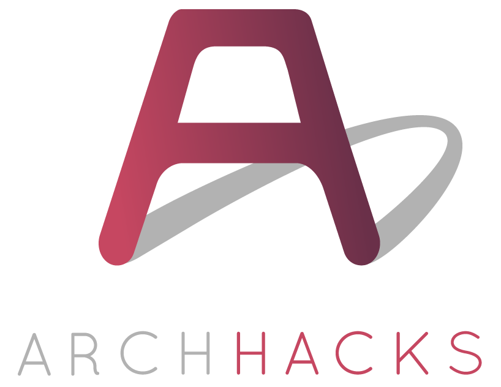

<!DOCTYPE html>
<html>
    <title>Apurv Prashanth | Home</title>
    <script src="https://code.jquery.com/jquery-3.2.1.min.js"></script>
    <link rel="stylesheet" href="https://maxcdn.bootstrapcdn.com/bootstrap/3.3.7/css/bootstrap.min.css">
    <script src="https://maxcdn.bootstrapcdn.com/bootstrap/3.3.7/js/bootstrap.min.js"></script> 
    <script src="js/index.js"></script>
    <link rel="stylesheet" href="css/index.css">
</html>
<body>
    <span id= 'nav-bar'>
        <span class = 'hover-lighten high-click' id='logo-container'>
             
        </span>
        <span id='links'>
             
            
             
            
        </span>
        
    </span>
    <div id='nav-bar-background'></div>
    <div id = 'about-me'>
        
        <div id= 'about-me-name'>Apurv Prashanth</div>
        <div id = "about-me-text">Hey! I am Apurv Prashanth, a second-year Computer Science student at University of Waterloo. I love Web Development, especially UI/UX. I am planning on getting a minor in Combinatorics and Optimization. I first started coding in Grade 10 on C++ and SQL which eventually led me to coding in HTML/CSS/JS and Python. I have made a few projects which you can check out below.</div>
        <div id='projects-button' class='button'>Projects</div>
        <div id = 'work-button' class='button'>Work Experience</div>
    </div>
    <div id = 'work' class='tab'>
        <div id = 'img-bg'></div>
        <h2>Work Experience</h2>
        <div id = 'ark-paradigm' class='work-company'>
            <span class='company-name'>
                
            </span>
            <div class='work-position'>Web Developer</div>
             <div class = 'work-term'>
                Spring 2017
            </div>
            <div class ='job-description'>
                Worked as a Web Developer focussing on the 
                <span class="keyword">front-end</span> using <span class="keyword">HTML</span>, <span class="keyword">CSS</span>, <span class="keyword">JavaScript(JQuery)</span>. Also set up the <span class="keyword">back-end</span> using <span class="keyword">Flask</span> and <span class="keyword">SQLAlchemy</span>.
            </div>
        </div>
    </div>
    <div id='projects' class="tab">
        <div id = 'img-bg-2'></div>
        <h2>Projects</h2>
        <div id='alertify' class='work-company'>
            <span class='company-name'>
                
            </span> 
            <span class='info-div'>
                <div class='work-position'>Alertify</div>
                 <div class = 'work-term'>
                    ArchHacks 2016, Washington University in St. Louis
                </div>
                <div class ='job-description'>
                    An <span class="keyword">Android App</span> that I made at ArchHacks 2016 which would store a patients information on the phone and would send the data to the nearest hospital with the push of a button on the notification tab using <span class="keyword">Google's Location API</span>.
                </div>
            </span>
        </div>
        <div id='bmp' class='work-company'>
            <span class='company-name'>
                
            </span> 
            <span class='info-div'>
                <div class='work-position'>Bank Management Project</div>
                 <div class = 'work-term'>
                    Summer 2016, Indian School Al-Ghubra
                </div>
                <div class ='job-description'>
                    12th Grade final project that used the <span class="keyword">Object Oriented Programming</span> functionalities of <span class="keyword">C++</span>.
                </div>
            </span>
        </div> 
        <div id='flappypu' class='work-company'>
            <span class='company-name'>
                
            </span> 
            <span class='info-div'>
                <div class='work-position'>FlappyPu - A Flappy Bird Clone</div>
                 <div class = 'work-term'>
                    Summer 2017, University of Waterloo
                </div>
                <div class ='job-description'>
                    A side project I did for fun to learn the <span class="keyword">LibGDX</span> framework for <span class="keyword">Android Studio</span>. Prioritizes game screens using a stack and the algorithms to manage gravity, speed and movements of the bird are controlled using vectors.
                </div>
            </span>
        </div>
    </div>
    <div id='resume'>
    Resume
        
    </div>
</body>